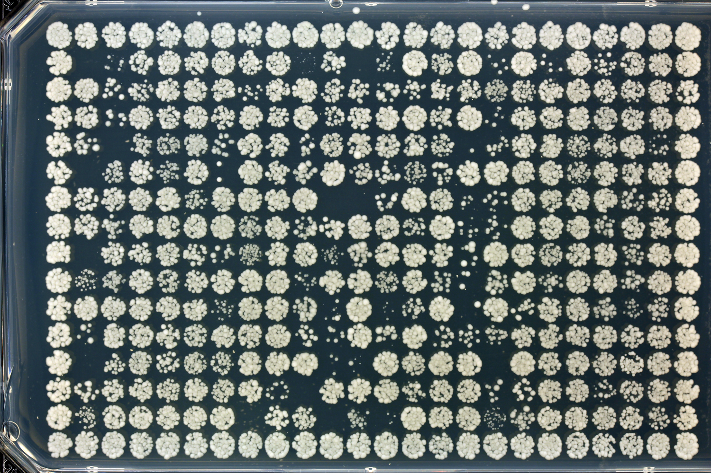
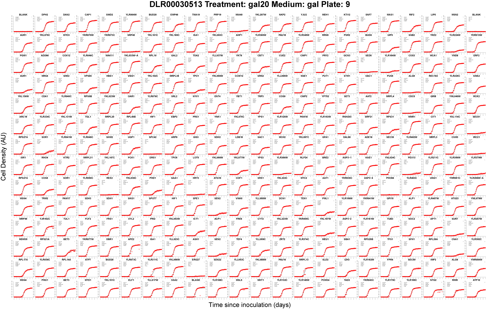

The R package is available for several operating systems at its R-forge page: http://r-forge.r-project.org/projects/qfa In theory, installation should be as simple as executing one of the following commands during an R session: install.packages("qfa", repos="http://R-Forge.R-project.org") Unfortunately, the Microsoft Windows builds on R-Forge seem to be a bit unreliable. One alternative is to install this version (compiled for 64-bit windows and R-2.13.0): install.packages("qfa",repos="http://research.ncl.ac.uk/colonyzer/R/") Source code for the package can also be checked out from R-forge by SVN.
In the QFA method, we generate cell density timecourse estimates by repeatedly photographing micro-organism cultures growing in regular arrays on solid agar plates. First, we quantify cell density from timecourse photographs using the image analysis tool Colonyzer (Lawless et al., 2010). Next, we fit a logistic model to the cell density timecourse for each independently growing culture, using the inferred logistic model parameters to define a quantitative measure of culture fitness. Comparisons between fitnesses can be extremely useful for deducing various aspects of the function of cultures. Some examples follow:
If the arrayed cultures contain relevant genetic mutations, we can use fitness estimates to infer the presence or absence of epistasis, and to quantify genetic interaction strengths. For example, Addinall et al., 2011 infer genetic interaction strength as the deviation of double mutant fitnesses from a multiplicative model of epistasis, and calculate the significance of deviations given noisy observations. If the arrayed cultures are grown at selected temperatures we can infer the extent of temperature sensitivity of mutants. Addinall et al., 2011 demonstrated the use of QFA to identify gene deletions resulting in increased temperature sensitivity. These results were verified by comparison with high-quality, low-throughput observations listed in the SGD database. If cultures are subject to treatments (e.g. nutrition, or drug treatments) we can generate quantitative, ranked lists of cultures which grow surprisingly well or badly given the treatment.
 
To put this R toolbox into context, it is for carrying out the mathematical and statistical aspects of the QFA workflow. This analysis stage is preceded by two others.
The first stage of QFA requires the generation of arrays of cultures of interest. This can be carried out in a high-throughput fashion, using libraries of gene mutations (as was done in Addinall et al., 2011), however it can also be carried out in a lower-throughput fashion, with hand selected and hand inoculated cultures, growing on a single plate for example. Once cultures are generated and inoculated onto agar, they must be repeatedly photographed. There are custom, semi-automatic and fully-automatic technologies available to facilitate timecourse photography of such plates (e.g. S&P Robotics SPImager, BM3), however any lab should be able to capture such timecourses by fixing a consumer digital camera over a plate, and repeatedly capturing images to a computer hard-drive via USB cable. It is important to capture the time at which the photographs were taken, most simply by embedding the date and time into the image filenames.
The second stage is the conversion of culture photographs into estimates of cell density. This is achieved using the the image analysis tool Colonyzer (Lawless et al., 2010. Colonyzer has been designed to eliminate lighting gradients in captured images, thereby allowing the capture of density estimates having no spatial bias without having to use expensive, carefully optimised lighting systems.
Given Colonyzer quantifications, and an appropriate experimental description (e.g. describing the location of each culture, the treatments applied, and the time of inoculation for each plate), the qfa R package contains everything needed to generate quantitiative fitness estimates for all cultures, together with estimates of genetic interaction strengths, if appropriate..
This R package consists of a set of functions, split into types below:
These functions for read in image analysis output from Colonyzer, associate these cell density estimates with culture type (e.g. genotype) & plate treatments and calculate time since inoculation for each observation. All of these data are bound together into a data.frame object, with rows representing unique observations of individual cultures.
These functions carry out parameter inference for the logistic model description of the observed growth curves. Inference can currently be carried out by maximum likelihood (fast, only provides point estimates for parameter values), however we are developing a set of Bayesian MCMC Gibbs sampler methods for inference which will provide distributed point estimates, making more use of the available observations. Logistic model parameter values can be used to construct quantitative fitness definitions for subsequent analysis.
Addinall et al., 2011 present methods for statistical epistasiis analysis based on linear error models. For appropriately designed experiments, these functions can be used to compare sets of query mutation observations with expected observations, given observations of control mutation fitnesses and the expected effect of the query mutation, given genome wide observations. Effectively, we use genome-wide observations to construct a linear predictor of query mutation fitness given control mutation fitness, and search for deviations from this prediction. Mutation fitnesses come from multiple observations and these can be summarised by mean or median fitness, and significance of deviations can correspondingly be estimated by Student's t-test or the Mann-Whitney test, both corrected for multiple comparisons. Analysis based on mean/t-test is preferred to that using median/Mann-Whitney test, since the latter have greater statistical power, however, in the case where it has not been possible to perform adequate quality control on the source data (e.g. there are occasionaly contaminants, or missing cultures, resulting in statistical outliers) the former may be preferable.
Together with the functions for carrying out the raw analysis above, we provide several functions for visualising the data, the fit of the logistic model to the data and the visualisation of evidence for epistatic interaction. These visualisation tools are important for tracking bugs and increasing user confidence in the validity of the sophisticated QFA workflows.